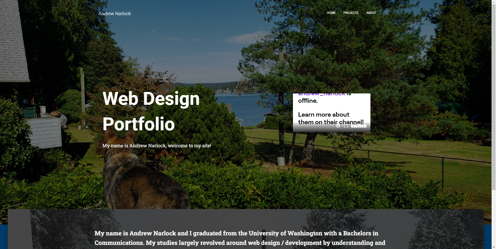
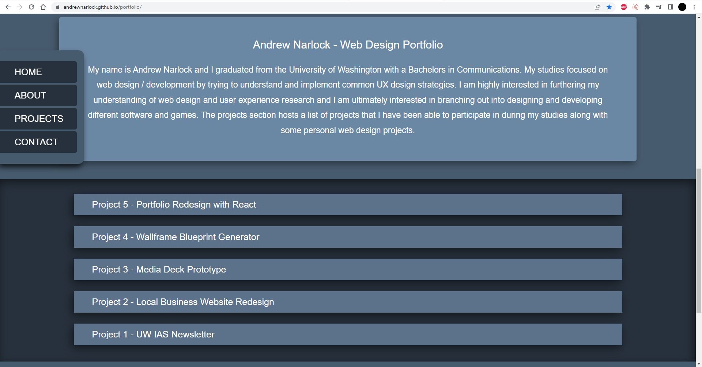

Andrew Narlock Design
The main goal of this project is to create a portfolio that demonstrates the different design and developement skills that I have been practicing. I have gone through several iterations of my web design portfolio with the intent on implementing new concepts each time. The first iteration was built using WordPress, during my Advanced Web Design course at the Univeristy of Washington. The main focus on this design was to implement user centered web design strategies learned from my classes. The old WordPress version can be seen here!

The next iteration of my portfolio was built using React. I was introduced to building websites from scratch using HTML, CSS, and JavaScript, and I wanted to build a website using a popular JS library. I decided to use React to build this design as I thought it was a good opportunity to get familiar with the library.
This is another shot of some dropdown menus from my React portfolio. After completing The Web Developer Bootcamp 2022 hosted on Udemy, I wanted to focus more on Front-End developement and building out a portfolio that looked nice. I wanted to move away from React for this project because I felt that the library was unessecary for the small scope of the project. I also wanted to use Bootstrap as a CSS framework because I had learned it and it seemed interesting.
While the newer design was much less bloated than the React version, I did not like being dependent on Bootstrap and I did not like the way it looked. This is a shot of the skills and projects sections from my last design. The current design is a major improvement, in my opinion. I decided to build my new portfolio completely from scratch with HTML, CSS, and JavaScript. It allowed me to learn how to create custom components such as the dropdown menus, navigation bars, and carousels. It was a great opportunity for implementing user centered design strategies and creating a fully responsive website that is usable on any device.